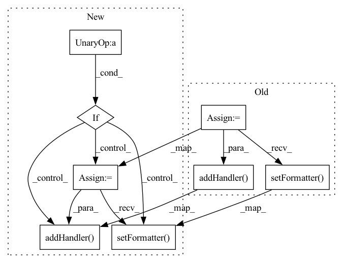

Pattern ID :30608
Before Change
// logger.addFilter(RepeatFilter())
// Add stream handler
stream_handler = colorlog.StreamHandler(stream=sys.stdout)
stream_handler.setFormatter( colored_formatter)
logger.addHandler( stream_handler)
// Add file handler
if log_folder:
os.makedirs(log_folder, exist_ok=True)After Change
logger.addFilter(RepeatFilter())
// Add stream handler if none has been added.
if not any(
[isinstance(h, colorlog.StreamHandler) for h in logger.handlers]
) :
stream_handler = colorlog.StreamHandler(stream=sys.stdout)
stream_handler.setFormatter( colored_formatter)
logger.addHandler( stream_handler)
// Add file handler if log folder is specified.
if log_folder:
os.makedirs(log_folder, exist_ok=True)In pattern: SUPERPATTERN
Frequency: 4
Non-data size: 8
Instances Fragment ID: 90413083
Project Name: graphnet-team/graphnet
Commit Name: bd3e5418b7edfeab96db9eec4a03bd56bee34218
Time: 2023-02-21
Author: andreas.sogaard@gmail.com
File Name: src/graphnet/utilities/logging.py
M Class Name: Logger
N Class Name: Logger
M Method Name: _configure_root_logger(2)
N Method Name: _configure_root_logger(2)
M Parent Class:
N Parent Class:
M File Name: src/graphnet/utilities/logging.py
N File Name: src/graphnet/utilities/logging.py
M Start Line: 87
M End Line: 111
N Start Line: 83
N End Line: 115
Before Change
logger.setLevel(logging.DEBUG)
formatter = logging.Formatter(
"%(asctime)s - %(name)s - %(levelname)s - %(message)s")
sh = logging.StreamHandler()
sh.setFormatter( formatter)
logger.addHandler( sh)
if log_file:
// New log will be appended, not overwrite
fh = logging.FileHandler(log_file)
fh.setFormatter(formatter)After Change
logger = logging.getLogger(name)
logger.setLevel(logging.DEBUG)
if not logger.hasHandlers() : // Prevent attaching multiple handlers
formatter = logging.Formatter(
"%(asctime)s - %(name)s - %(levelname)s - %(message)s")
sh = logging.StreamHandler()
sh.setFormatter( formatter)
logger.addHandler( sh)
if log_file:
// New log will be appended, not overwrite
fh = logging.FileHandler(log_file)
fh.setFormatter(formatter) Fragment ID: 90413081
Project Name: zjunlp/dart
Commit Name: c41d9ead1c1a3b76eab8ba323f0f3dcdd350655e
Time: 2022-12-03
Author: lilq1285@163.com
File Name: src/utils.py
M Class Name: AnonimousClass
N Class Name: AnonimousClass
M Method Name: get_logger(2)
N Method Name: get_logger(2)
M Parent Class:
N Parent Class:
M File Name: src/utils.py
N File Name: src/utils.py
M Start Line: 17
M End Line: 28
N Start Line: 15
N End Line: 30
Before Change
self.time_costs = []
self.time_buf = {}
self.formatter = logging.Formatter("%(asctime)s %(filename)s %(funcName)s [line:%(lineno)d] %(levelname)s %(message)s")
self.head = logging.StreamHandler()
self.head.setLevel(logging.INFO)
self.head.setFormatter( self.formatter)
self.addHandler( self.head)
def check_if_log(self, round, eval_interval=-1):
For evaluating every "eval_interval" rounds, check whether to log at "round".
self.current_round = roundAfter Change
self.time_buf = {}
self.formatter = logging.Formatter("%(asctime)s %(filename)s %(funcName)s [line:%(lineno)d] %(levelname)s %(message)s")
self.handler_list = []
if not self.meta["no_log_console"] :
self.streamhandler = logging.StreamHandler()
self.streamhandler.setFormatter( self.formatter)
self.streamhandler.setLevel(self._LEVEL[self.meta["log_level"].upper()])
self.addHandler( self.streamhandler)
if self.meta["log_file"]:
log_dir = self.get_log_path()
self.log_path = os.path.join(log_dir, self.get_time_string()+self.get_output_name(".log"))
if not os.path.exists(self.get_log_path()): Fragment ID: 90413084
Project Name: wwzzz/easyfl
Commit Name: 45505e44ba6f50c9df0453fd543b7dfe0891d0e9
Time: 2022-07-29
Author: zzz510711928@gmail.com
File Name: utils/logger/basic_logger.py
M Class Name: Logger
N Class Name: Logger
M Method Name: __init__(2)
N Method Name: __init__(1)
M Parent Class: logging.Logger
N Parent Class: logging.Logger
M File Name: utils/logger/basic_logger.py
N File Name: utils/logger/basic_logger.py
M Start Line: 16
M End Line: 19
N Start Line: 22
N End Line: 48